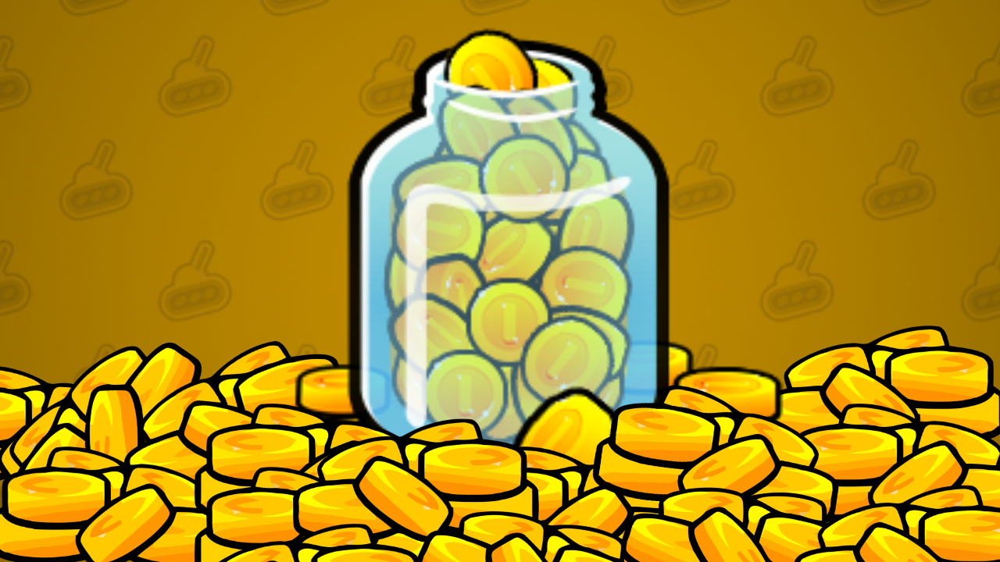

Rocket Bot Royale
How to farm Coins in Rocket Bot Royale

Introduction
There are many ways to collect coins but each one gives larger or smaller amount and some ways are not recommended. Now let's talk about every way to get coins!
Method 1: Picking Up Coins
This is the first and most obvious method of getting coins, picking
them up on the maps. This is not recommended in ranked mode because you
need to focus on the other players instead of picking up coins! Squad
Deathmatch is also not recommended because when you die you drop all of
your coins! The best game mode is the non-ranked solos because you do
not have to worry much about kills.
Using the magnet perk can really be helpful to pick up coins and item crates easily!

The only problem with this method is, you have to play the game and collect these coins yourself.
💡 Tip: Coins, kills, gems, anything you get while in customs do not count at all
Method 2: Playing the Game
Killing other players drops any coins they may have dropped!Method 3: Collecting 100 Coins
This method is a lot less grind intensive since all you need to do is wait every 30 minutes to collect the 100 coins bonus!

I would recommend combining this method with the first method to maximize your coin earning.
Also this is the one place where tools like Automatic Coin Redeemer (ACR) helped massively to farm coins by running a code that collects this every 30 min allowing you to collect 4800 coins every day! Imagine how much that is every day! Unfortunately the tool no longer works with some of the changes made by winterpixel!
If you still want to try, the link to the tool is ACR v2 tool
Method 4: Season Pass
The Season rewards has a lot of coins to give for grinding! This is the fastest method even without season pass to get coins! But you get a lot of other rewards if you buy season pass and way more coins to easily get your next crate!

Without the pass, you can get 1600 coins, but with the season pass you
can get a total of 5300 coins! But this will require some grinding obviously, so I recommend playing Squad Deathmatch game mode because of
how easy it is to get season points.

Method 5: Leaderboard (and playoffs)
Leaderboard is the best way to get a HUGE amount of coins and gems,
however that requires skills and it is hard to get into the ranks that
give a crazy amount of coins and gems! The only difference tho, you no longer get this amount of coins and gems at higher leagues shown below!
You only get 100 gems and 10k coins for amethyst and above, but try to place in amethyst and above for a chance to win a high amount of coins and other rewards! Here is all the rewards that playoffs has!